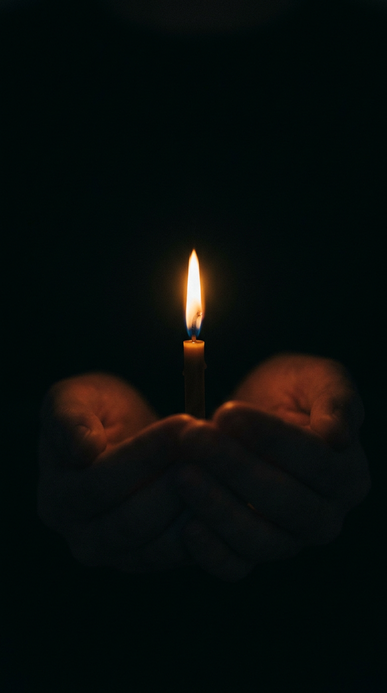
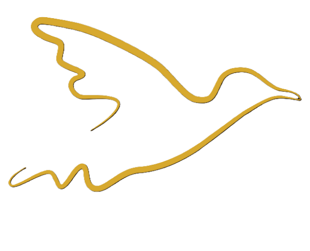

Wieczór I
Dankowice
29 listopada
niedziela
17:00
Bielsko-Biała Złote Łany
Modlitwę prowadząEwelina Kwoczyńska
Jan Kamiński


mały ptakAdwent · 2026
Wieczory wspólnej modlitwy
Medytacja muzyczna pieśni adwentowych oraz kompozycji własnych. Muzycy prowadzą wspólną modlitwę — w Dankowicach, Krakowie i Skoczowie.
Modlitwa · śpiew · cisza
Wieczór I
Dankowice
17:00
Bielsko-Biała Złote Łany
Modlitwę prowadząEwelina Kwoczyńska
Jan Kamiński
Wieczór II
Kraków
19:00
Kraków
Modlitwę prowadząEwelina Kwoczyńska
Jan Kamiński
Bartłomiej Piwowarczyk
Zofia Spisak
Wieczór III
Skoczów
19:00
Parafia pw. św. Ap. Piotra i Pawła w Skoczowie
Modlitwę prowadząEwelina Kwoczyńska
Jan Kamiński
Także w Wielkim Poście
Projekt «czekam» tworzy również w okresie Wielkiego Postu — wtedy także prowadzi wieczory wspólnej modlitwy. Szczegóły i terminy wielkopostnych spotkań opublikujemy już przed rozpoczęciem Postu.
Terminy wkrótce
mały ptak
Czekam to nie koncert — to wspólna modlitwa, którą prowadzą muzycy. Pieśni adwentowe przeplatają się z kompozycjami własnymi, a wszystko odbywa się w ciszy i półmroku. Przychodzimy, by razem zatrzymać się i po prostu… czekać.
Muzycy projektu «czekam»
Ewelina Kwoczyńska
Wszystkie wieczory
Jan Kamiński
Wszystkie wieczory
Bartłomiej Piwowarczyk
Wieczór II — Kraków
Zofia Spisak
Wieczór II — Kraków